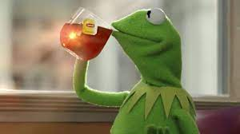

Part of the game here is to limit the use of ocal style sheets and to put as much as the Css code as possible into the external CSS file. You will, in certain places, use local style sheets. BUt try to keep that as minimal as possible.
A very useful property is text-align. It has four possible values.
left left-justifies text(default in user agent)
center centers text
right right-justified text
justifyThis justifies on both sides. Check this out: YOU don't know about me without you have
read a book by the name of The Adventures of Tom Sawyer; but that ain't
no matter. That book was made by Mr. Mark Twain, and he told the
truth, mainly. There was things which he stretched, but mainly he told
the truth. That is nothing. I never seen anybody but lied one time or
another, without it was Aunt Polly, or the widow, or maybe Mary. Aunt
Polly--Tom's Aunt Polly, she is--and Mary, and the Widow Douglas is all
told about in that book, which is mostly a true book, with some
stretchers, as I said before.
I showed you some of the <p class="text-align:center"> trick to center an image on a page
Now it's time for a trip to W3School to do some list styling. We will begin by Roman along. Notice that the text in the list items can be turned green, and it's not easy to be that way.

Now lets' get a little square